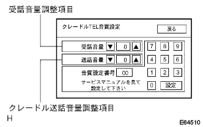
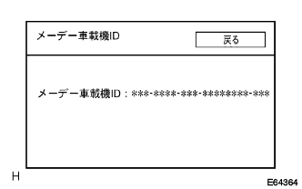
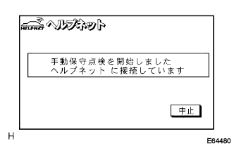
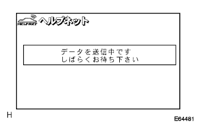
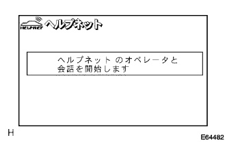
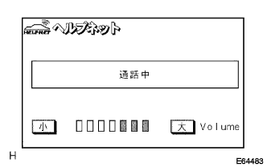
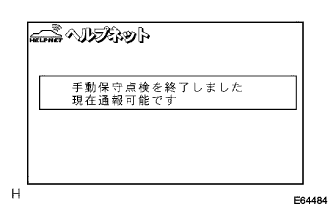

)参照。
)参照。ハンズフリー&ワンタッチタイプヘルプネットシステム 機能点検 |
)参照。ダイアグ起動
エンジンを始動する。
ダイアグノーシスを起動させる。(要領は参照)
 |
ダイアグ検査メニュー画面の“ナビ検査”を選択する。
 |
ナビ検査メニュー画面の“TEL音質設定”を選択し、TEL音質設定画面を表示させる。
|  |
TEL音質設定
画面スイッチを操作し音量の調整を行う。
| 項目 | 表示内容 |
|---|---|
| 受話音量調整項目 | ハンズフリー通話時の受話音量(自分に聞こえる相手の声)を調整する |
| 送話音量調整項目 | ハンズフリー通話時の送話音量(相手に聞こえる自分の声)を調整する |
)参照。ダイアグ起動
エンジンを始動する。
ダイアグノーシスを起動させる。(要領は参照)
|
ダイアグ検査メニュー画面の“ナビ検査”を選択する。
|
ナビ検査メニュー画面の“簡易メーデー検査”を選択し、メーデー検査画面を表示させる。
 |
メーデー検査
画面表示内容を確認する。
| 項目 | 表示内容 |
|---|---|
| メーデー通信 | ヘルプネットオペレーションセンターとの通信が正常に終了した場合は“OK”、正常に終了しなかった場合は“NG”と表示する |
| 通報時の携帯機接続 | 通報開始時に携帯機の接続が確認された場合は“OK”、接続が確認されなかった場合は“NG”と表示する |
| 通報時の携帯機番号 | 通報時に使用した携帯機の電話番号を表示する |
| 通報時の日時 | 通報時の日時を年/月/日 時:分で表示する |
メーデー通信結果および通報時の携帯機接続表示内容を確認する。
参照)車載機ID確認
|
“車載機ID”を選択する。
|  |
車載機IDを確認する。
GPS受信確認
現在地画面で、GPSマークが表示されていることを確認する。
 |
手動保守点検
“情報·G”ボタンを押し、情報画面を表示させる。
情報画面で“設定”を押す。
 |
設定画面で、“ヘルプネット保守点検”を10秒以上長押しする。
|  |
ヘルプネットオペレーションセンターに接続を開始する。
|  |
ヘルプネットオペレーションセンターに接続すると、最初にデータ通信を行い、車両の現在地や手動保守点検をしていること、ヘルプネットオペレーションセンターに会員登録されていることを確認する。
|  |
データ通信完了後、通話モードとなる。
|  |
マイクを通してヘルプネットオペレーションセンターと通話し、通話が正常に行えること、通報位置が正しいことを確認する。
|  |
会話終了後に最新のシステム情報を表示し、点検を終了する。
その後現在地画面を表示する。
|
“情報·G”ボタンを押す。
情報画面で、“HELPNET”スイッチが表示されていることを確認する。